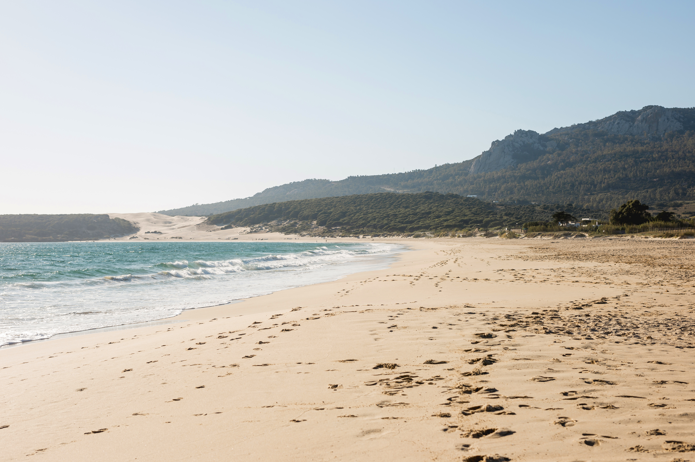

Cuenta atras
Destinos destacados

La gran feria del turismo y los viajes llega un año más para ofrecerte las mejores oportunidades para tus próximas vacaciones. En Expo Vacaciones 2025 encontrarás destinos increíbles, ofertas exclusivas, experiencias únicas y toda la inspiración que necesitas para planificar tu próxima aventura.
Descubre el mundo
Explora una amplia variedad de destinos nacionales e internacionales. Desde playas paradisíacas hasta escapadas rurales, pasando por grandes ciudades llenas de cultura y entretenimiento.
Ofertas especiales
Aprovecha las promociones exclusivas de agencias de viajes, aerolíneas, hoteles y empresas turísticas. ¡Solo disponibles durante la feria!
Actividades y experiencias
Participa en charlas, talleres y presentaciones sobre turismo sostenible, viajes de aventura, gastronomía internacional y mucho más.
Fechas y lugar
Expo Vacaciones 2025 se celebrará del 10 al 12 de mayo de 2025 en el Bilbao Exhibition Centre (BEC).
¡Te esperamos!
Ven a disfrutar de un evento pensado para los amantes de los viajes. Vive la experiencia Expo Vacaciones 2025 y descubre todo lo que el mundo tiene para ofrecerte.